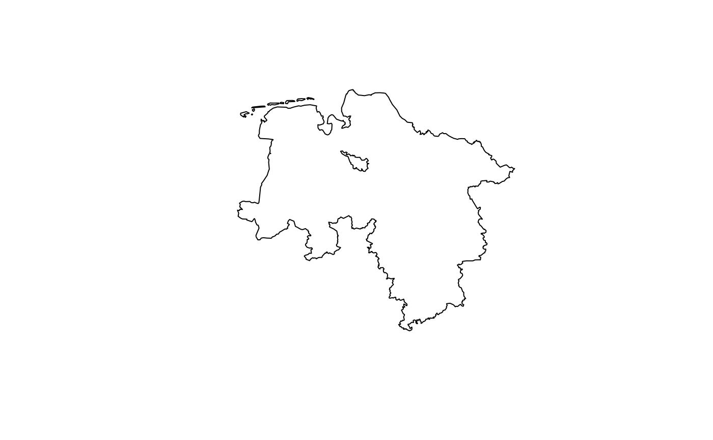

Retrieve land cover polygons in Germany based on the Corine Land Cover (CLC) nomenclature. Corine Land Cover is a way to project by the European Commission to consistenly classify both land cover and land use.
This function interfaces the wfs_clc5_* products of the BKG.
Usage
bkg_clc(
...,
year = "2018",
bbox = NULL,
poly = NULL,
predicate = "intersects",
filter = NULL,
epsg = 3035,
properties = NULL,
max = NULL
)Arguments
- ...
Used to construct CQL filters. Dot arguments accept an R-like syntax that is converted to CQL queries internally. These queries basically consist of a property name on the left, an aribtrary vector on the right, and an operator that links both sides. If multiple queries are provided, they will be chained with
AND. The following operators and their respective equivalents in CQL and XML are supported:R CQL XML ===PropertyIsEqualTo!=<>PropertyIsNotEqualTo<<PropertyIsLessThan>>PropertyIsGreaterThan>=>=PropertyIsGreaterThanOrEqualTo<=<=PropertyIsLessThanOrEqualTo%LIKE%LIKEPropertyIsLike%ILIKE%ILIKE%in%INPropertyIsEqualToandOrTo construct more complex queries, you can use the
filterargument to pass CQL queries directly. Also note that you can switch between CQL and XML queries usingoptions(ffm_query_language = "xml"). See alsowfs_filter.- year
Version year of the dataset. You can use
latestto retrieve the latest dataset version available on the BKG's geodata center. Older versions can be browsed using the archive.- bbox
An sf geometry or a boundary box vector of the format
c(xmin, ymin, xmax, ymax). Used as a geometric filter to include only those geometries that relate tobboxaccording to the predicate specified inpredicate. If an sf geometry is provided, coordinates are automatically transformed to ESPG:25832 (the default CRS), otherwise they are expected to be in EPSG:25832.- poly
An sf geometry. Used as a geometric filter to include only those geometries that relate to
polyaccording to the predicate specified inpredicate. Coordinates are automatically transformed to ESPG:25832 (the default CRS).- predicate
A spatial predicate that is used to relate the output geometries with the object specified in
bboxorpoly. For example, ifpredicate = "within", andbboxis specified, returns only those geometries that lie withinbbox. Can be one of"equals","disjoint","intersects","touches","crosses","within","contains","overlaps","relate","dwithin", or"beyond". Defaults to"intersects".- filter
A character string containing a valid CQL or XML filter. This string is appended to the query constructed through
.... Use this argument to construct more complex filters. Defaults toNULL.- epsg
An EPSG code specifying a coordinate reference system of the output. If you're unsure what this means, try running
sf::st_crs(...)$epsgon a spatial object that you are working with. Defaults to 3035.- properties
Vector of columns to include in the output.
- max
Maximum number of results to return.
Value
An sf dataframe with polygon geometries and the following columns:
clc*: CLC land cover classes for the given year. An overview of all CLC classes can be found in the Copernicus documentation.shape_length: Circumference of the polygon in metersshape_area: Area of the polygon in square meters
Query language
By default, WFS requests use CQL (Contextual Query Language) queries for
simplicity. CQL queries only work together with GET requests. This means
that when the URL is longer than 2048 characters, they fail.
While POST requests are much more flexible and able to accommodate long
queries, XML is really a pain to work with and I'm not confident in my
approach to construct XML queries. You can control whether to send GET or
POST requests by setting options(ffm_query_language = "XML")
or options(ffm_query_language = "CQL").
Examples
# Get glaciers in Germany
bkg_clc(clc18 == "335")
#> Simple feature collection with 6 features and 3 fields
#> Geometry type: POLYGON
#> Dimension: XY
#> Bounding box: xmin: 4350370 ymin: 2695374 xmax: 4541743 ymax: 2720320
#> Projected CRS: ETRS89-extended / LAEA Europe
#> # A tibble: 6 × 4
#> clc18 shape_length shape_area geometry
#> <chr> <dbl> <dbl> <POLYGON [m]>
#> 1 335 1332. 68237. ((4541410 2720320, 4541415 2720318, 4541419 272…
#> 2 335 1054. 53554. ((4394508 2699440, 4394511 2699439, 4394517 269…
#> 3 335 2757. 338082. ((4394620 2700741, 4394664 2700712, 4394672 270…
#> 4 335 1853. 111068. ((4395642 2700982, 4395641 2700975, 4395641 270…
#> 5 335 2667. 129627. ((4396030 2701965, 4396033 2701965, 4396036 270…
#> 6 335 1321. 68108. ((4350555 2695461, 4350554 2695457, 4350553 269…
# Get all coastal wetlands
bkg_clc(clc18 %LIKE% "42%")
#> Simple feature collection with 404 features and 3 fields
#> Geometry type: POLYGON
#> Dimension: XY
#> Bounding box: xmin: 4096873 ymin: 3350867 xmax: 4498721 ymax: 3550677
#> Projected CRS: ETRS89-extended / LAEA Europe
#> # A tibble: 404 × 4
#> clc18 shape_length shape_area geometry
#> <chr> <dbl> <dbl> <POLYGON [m]>
#> 1 423 5495. 488298. ((4190905 3408370, 4190944 3408290, 4190946 34…
#> 2 421 23980. 3749087. ((4183414 3403081, 4183416 3403080, 4183423 34…
#> 3 421 14760. 1397288. ((4180799 3411338, 4180899 3411327, 4180909 34…
#> 4 423 8598. 864323. ((4190000 3410353, 4190147 3410179, 4190156 34…
#> 5 423 1575. 164467. ((4189121 3410873, 4189125 3410872, 4189128 34…
#> 6 423 24185. 2903870. ((4182567 3411872, 4182731 3411842, 4182734 34…
#> 7 423 5625. 184655. ((4133436 3362190, 4133441 3362189, 4133444 33…
#> 8 421 2947. 156729. ((4138081 3360312, 4138079 3360311, 4138074 33…
#> 9 421 4382. 438589. ((4137427 3361663, 4137433 3361663, 4137437 33…
#> 10 423 3338. 201369. ((4129907 3359668, 4129904 3359666, 4129899 33…
#> # ℹ 394 more rows
# Get only wetlands in Lower Saxony
lowsax <- bkg_admin(level = "lan", scale = "5000", sn_l == "03", gf == 9)
wetlands <- bkg_clc(clc18 %LIKE% "4%", poly = lowsax, lang = "xml")
plot(lowsax$geometry)
plot(wetlands$geometry, add = TRUE)
